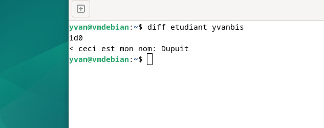
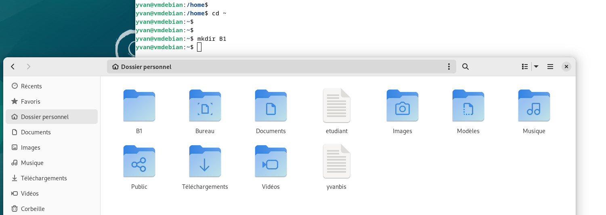
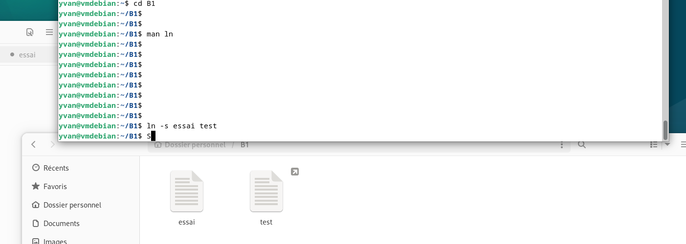
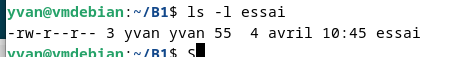
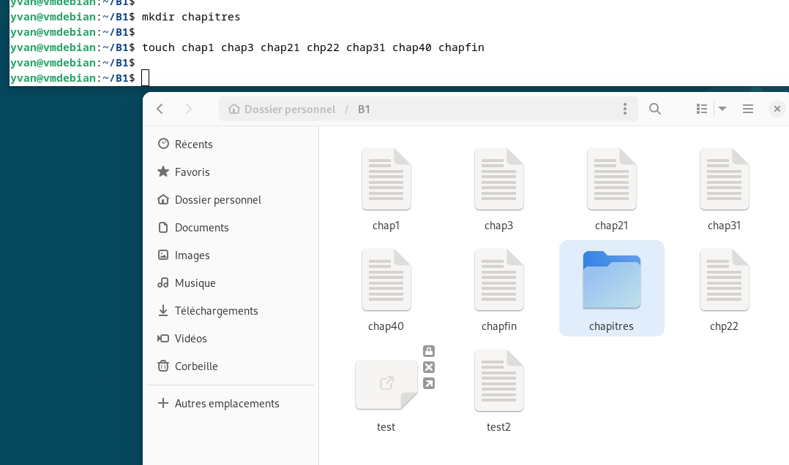

Navigation et fichiers
Les premières commandes à maîtriser sous Linux sont celles de navigation et de gestion des fichiers. On travaille ici sur Debian en VM. Le terminal montre l'utilisateur, la machine et le répertoire courant : yvan@vmdebian:~/essai$.

| Commande | Rôle |
|---|---|
| ls | Lister les fichiers |
| ls -la | Lister avec détails et fichiers cachés |
| cd dossier | Changer de répertoire |
| mkdir nom | Créer un dossier |
| rm fichier | Supprimer un fichier |
| cp src dest | Copier un fichier |
| mv src dest | Déplacer / renommer |
Lire et afficher des fichiers
La commande cat affiche le contenu d'un fichier directement dans le terminal. Pour les gros fichiers, on préfère less ou more qui permettent de paginer. head et tail affichent les premières ou dernières lignes.


Recherche dans les fichiers avec grep
La commande grep cherche un motif (texte ou expression régulière) dans un fichier. Très utile pour filtrer des logs ou chercher une info dans un gros fichier de config. Avec -i la recherche est insensible à la casse, avec -r elle est récursive dans les dossiers.

yvan@vmdebian:~$ grep "sun" res here comes the sun Following the sun
Droits et permissions
Sous Linux, chaque fichier a des droits définis pour trois entités : le propriétaire (owner), le groupe, et les autres (others). ls -la affiche ces droits sous forme -rwxr-xr--. chmod modifie les droits, chown change le propriétaire.


chmod 755 fichier (owner=rwx, group=rx, others=rx) ou chmod +x script.sh pour rendre un script exécutable.